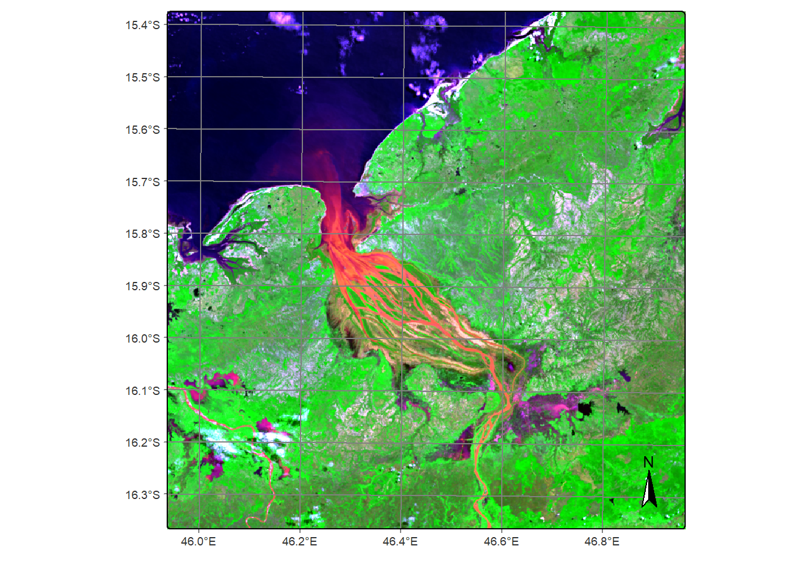

The team behind the R packages rstac and
sits (Satellite Image Time Series Analysis on Earth
Observation Data Cubes) have expertly made Digital Earth Africa
available through R. This means the many operations available through
the sits package can be applied to Digital Earth Africa
data. It also means that R users can easily access Digital Earth Africa
data for their own purposes.
The installation functions have been commented out (#). Remove the #
to install the listed packages if not already installed. The
library() command then loads packages.
#install.packages("sf")
#install.packages("terra")
#install.packages("sits", dependencies = TRUE)
library(sf)
library(terra)
library(sits)
library(rstac)The following code loads Sentinel-2 images for a defined period and area in Madagascar. Note the definition of source, collection, band names, dates, and coordinates in the loading function. The returned object is a `sits cube’ which can be queried and plotted, as below.
dea_s2_cube <- sits_cube(
source = "DEAFRICA",
collection = "SENTINEL-2-L2A",
roi = c(
lon_min = 46.1, lat_min = -15.6,
lon_max = 46.6, lat_max = -16.1
),
bands = c(
"B02", "B03", "B04",
"B05", "B06", "B07",
"B08", "B8A", "B11",
"B12", "CLOUD"
),
start_date = "2019-04-01",
end_date = "2019-11-30"
)## | | | 0% | |======================================================================| 100%plot(dea_s2_cube, red = "B04", blue = "B02", green = "B08") ## Loading with rstac
We can also load Digital Earth Africa directly through STAC metadata using the rstac package. Note the naming conventions used for collections, dates, and stac endpoints. Some guidance on this is available on the Digital Earth Africa documentation and some stacspec documentation.
s_obj <- stac("https://explorer.digitalearth.africa/stac")
bbox <- c(46.1, -15.6, 46.6, -16.1)
url <- stac("https://explorer.digitalearth.africa/stac") %>%
stac_search(collections = "s2_l2a",
bbox = bbox, datetime = "2019-04-03/2019-04-05", limit=40) %>%
get_request() %>% assets_select(asset_names=
c("B02", "B04",
"B08")) %>%
assets_url() Below, the rast function from the terra
package is used to bring the data into memory as a
SpatRaster object. When plotted, we can see the same
Sentinel-2 image we loaded using SITS.
stack <- rast(url)
plotRGB(stack, r= "B04", b = "B02", g = "B08", scale=10000, stretch= 'hist')We can view the available data collections from Digital Earth Africa
using the sits_list_collections() function as below. Note
the bands listed, the names of which can be used to access the data. In
some cases, such as for surface reflectance, we may need more
information about the bands to load. In these cases we can refer to the
DE Africa Explorer.
For example, we can see that B05 corresponds to the NIR
band for Landsat-8 by checking product specifications in the
Explorer.
sits_list_collections(source = 'DEAFRICA')## DEAFRICA:
## - ALOS-PALSAR-MOSAIC (PALSAR/ALOS)
## - grid system:
## - bands: HH HV CLOUD
## - opendata collection
##
## - DEM-COP-30 (COP-DEM/30)
## - grid system:
## - bands: ELEVATION
## - opendata collection
##
## - LS5-SR (LANDSAT-5/TM-MSS)
## - grid system: WRS-2
## - bands: B01 B02 B03 B04 B05 B07 CLOUD
## - opendata collection
##
## - LS7-SR (LANDSAT-7/ETM)
## - grid system: WRS-2
## - bands: B01 B02 B03 B04 B05 B07 CLOUD
## - opendata collection
##
## - LS8-SR (LANDSAT-8/OLI)
## - grid system: WRS-2
## - bands: B01 B02 B03 B04 B05 B06 B07 CLOUD
## - opendata collection
##
## - LS9-SR (LANDSAT-9/OLI)
## - grid system: WRS-2
## - bands: B01 B02 B03 B04 B05 B06 B07 CLOUD
## - opendata collection
##
## - NDVI-ANOMALY (LANDSAT-SENTINEL/OLI-MSI)
## - grid system:
## - bands: NDVI-MEAN NDVI-STD-ANOMALY
## - opendata collection
##
## - RAINFALL-CHIRPS-DAILY (CHIRPS/CHIRPS)
## - grid system:
## - bands: RAINFALL
## - opendata collection
##
## - RAINFALL-CHIRPS-MONTHLY (CHIRPS/CHIRPS)
## - grid system:
## - bands: RAINFALL
## - opendata collection
##
## - SENTINEL-1-RTC (SENTINEL-1/RTC)
## - grid system: MGRS
## - bands: VV VH
## - opendata collection
##
## - SENTINEL-2-L2A (SENTINEL-2/MSI)
## - grid system: MGRS
## - bands: B01 B02 B03 B04 B05 B06 B07 B08 B8A B09 B11 B12 CLOUD
## - opendata collectiondea_ls8_cube <- sits_cube(
source = "DEAFRICA",
collection = "LS8-SR",
roi = c(
lon_min = 46.1, lat_min = -15.6,
lon_max = 46.6, lat_max = -16.1
),
bands = c(
"B04", "B02", "B05"
),
start_date = "2019-04-01",
end_date = "2019-11-30"
)## | | | 0% | |======================================================================| 100%plot(dea_ls8_cube, red = "B04", blue = "B02", green = "B05")